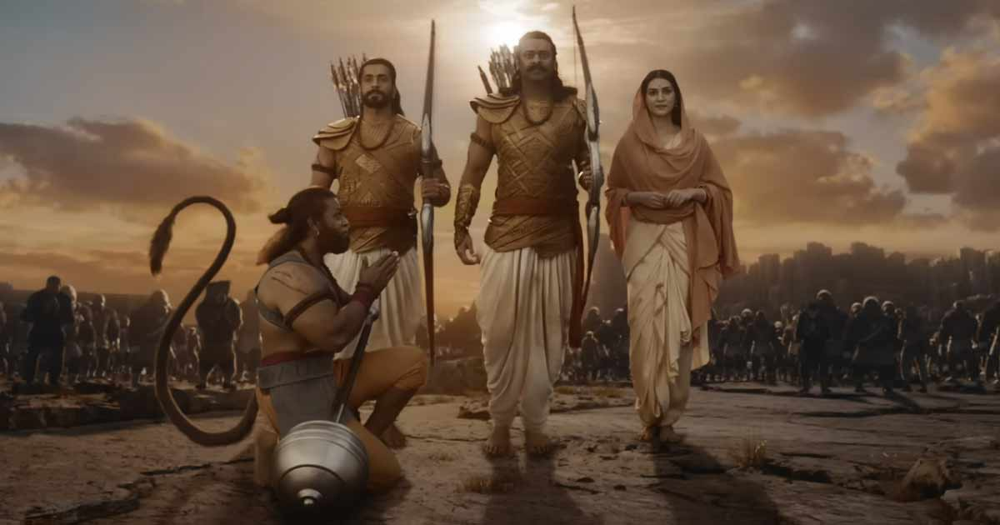
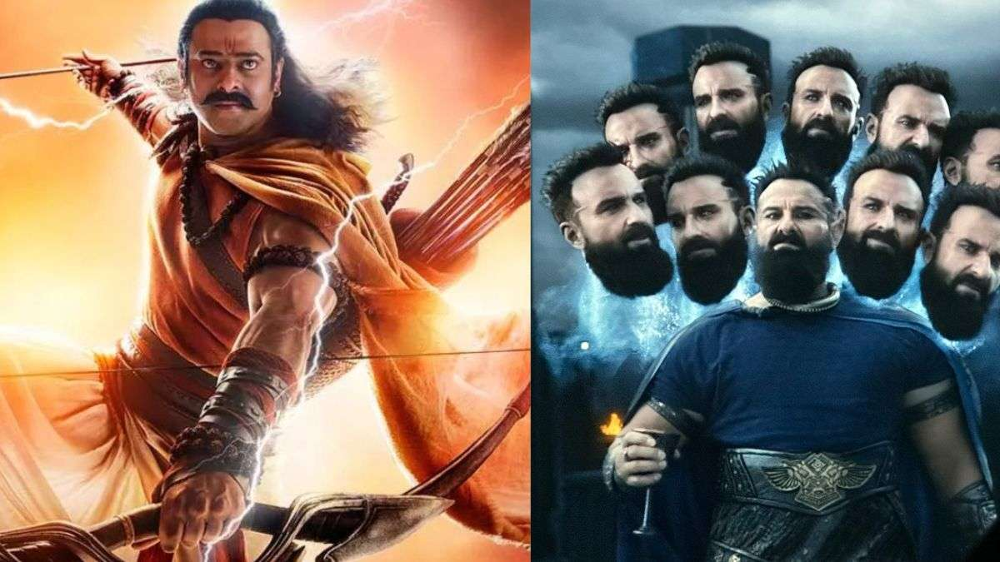

| HOME | FASHION | TRAVEL | FOOD | LIFESTYLE | SPORTS | HEALTH | MOVIES | ABOUT US |
|---|
1. We have not made Ramayana, we were only inspired by it: 'Adipurush' writer Manoj Muntashir

'Adipurush' writer Manoj Muntashir, in a recent interview, said, "We have not made Ramayana, we were only inspired by it.
Even if you see our disclaimer, we were very clear about it."
He added, "It would have been easy for us to name the film Ramayana, keeping in mind the marketing strategies."
2. Turned Ramayana into 'H'wood's cartoon film': Govil on Adipurush

Actor Arun Govil, known for playing Lord Ram in Ramanand Sagar's 'Ramayan', has said that makers of 'Adipurush' turned 'Ramayana'
into a Hollywood cartoon film. "What was wrong with the depiction we have all known and loved for all these years...What was the need
to change things...Perhaps the team doesn't have proper faith in Lord Ram and Sita," Govil aadded.
Copyright 2023, All Right Reserved, www.tlcnewsofficial, Designed by : YASHIKA GOEL